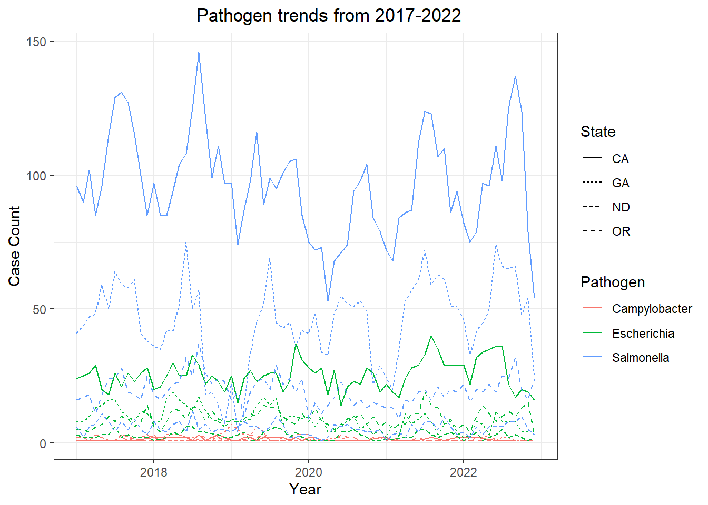
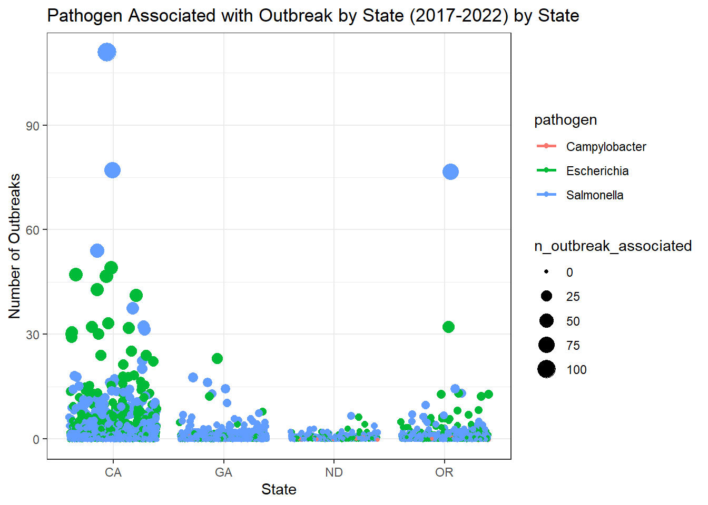
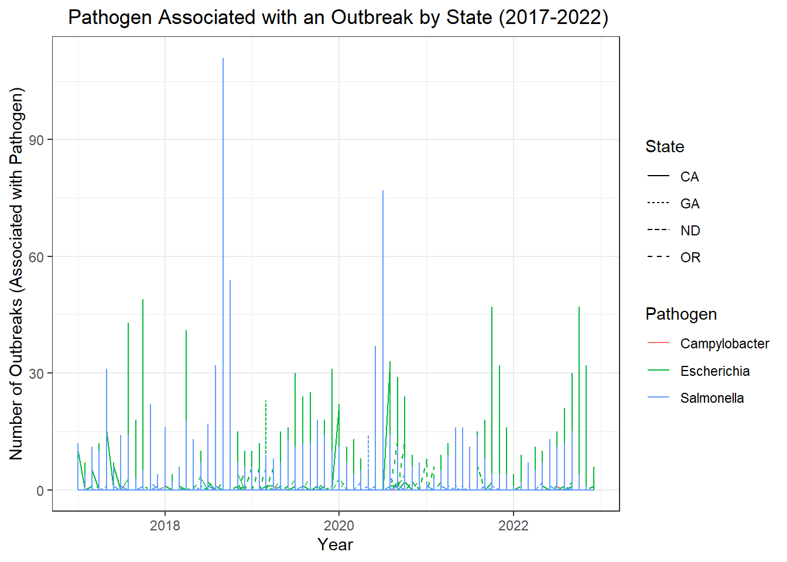
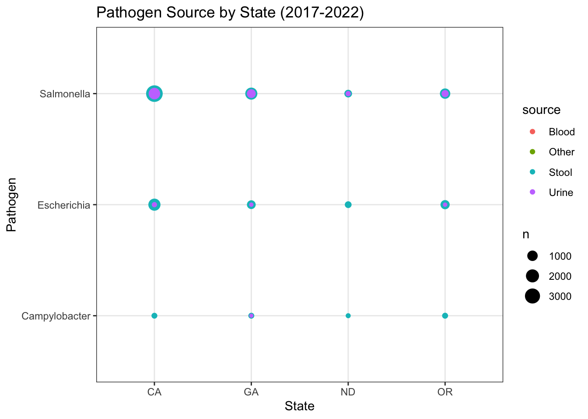

<!DOCTYPE html>
<html xmlns="http://www.w3.org/1999/xhtml" lang="en" xml:lang="en"><head>

<meta charset="utf-8">
<meta name="generator" content="quarto-1.2.313">

<meta name="viewport" content="width=device-width, initial-scale=1.0, user-scalable=yes">

<meta name="author" content="Leah Lariscy">

<title>My Data Analysis Portfolio - Data Analysis Exercise</title>
<style>
code{white-space: pre-wrap;}
span.smallcaps{font-variant: small-caps;}
div.columns{display: flex; gap: min(4vw, 1.5em);}
div.column{flex: auto; overflow-x: auto;}
div.hanging-indent{margin-left: 1.5em; text-indent: -1.5em;}
ul.task-list{list-style: none;}
ul.task-list li input[type="checkbox"] {
  width: 0.8em;
  margin: 0 0.8em 0.2em -1.6em;
  vertical-align: middle;
}
pre > code.sourceCode { white-space: pre; position: relative; }
pre > code.sourceCode > span { display: inline-block; line-height: 1.25; }
pre > code.sourceCode > span:empty { height: 1.2em; }
.sourceCode { overflow: visible; }
code.sourceCode > span { color: inherit; text-decoration: inherit; }
div.sourceCode { margin: 1em 0; }
pre.sourceCode { margin: 0; }
@media screen {
div.sourceCode { overflow: auto; }
}
@media print {
pre > code.sourceCode { white-space: pre-wrap; }
pre > code.sourceCode > span { text-indent: -5em; padding-left: 5em; }
}
pre.numberSource code
  { counter-reset: source-line 0; }
pre.numberSource code > span
  { position: relative; left: -4em; counter-increment: source-line; }
pre.numberSource code > span > a:first-child::before
  { content: counter(source-line);
    position: relative; left: -1em; text-align: right; vertical-align: baseline;
    border: none; display: inline-block;
    -webkit-touch-callout: none; -webkit-user-select: none;
    -khtml-user-select: none; -moz-user-select: none;
    -ms-user-select: none; user-select: none;
    padding: 0 4px; width: 4em;
    color: #aaaaaa;
  }
pre.numberSource { margin-left: 3em; border-left: 1px solid #aaaaaa;  padding-left: 4px; }
div.sourceCode
  {   }
@media screen {
pre > code.sourceCode > span > a:first-child::before { text-decoration: underline; }
}
code span.al { color: #ff0000; font-weight: bold; } /* Alert */
code span.an { color: #60a0b0; font-weight: bold; font-style: italic; } /* Annotation */
code span.at { color: #7d9029; } /* Attribute */
code span.bn { color: #40a070; } /* BaseN */
code span.bu { color: #008000; } /* BuiltIn */
code span.cf { color: #007020; font-weight: bold; } /* ControlFlow */
code span.ch { color: #4070a0; } /* Char */
code span.cn { color: #880000; } /* Constant */
code span.co { color: #60a0b0; font-style: italic; } /* Comment */
code span.cv { color: #60a0b0; font-weight: bold; font-style: italic; } /* CommentVar */
code span.do { color: #ba2121; font-style: italic; } /* Documentation */
code span.dt { color: #902000; } /* DataType */
code span.dv { color: #40a070; } /* DecVal */
code span.er { color: #ff0000; font-weight: bold; } /* Error */
code span.ex { } /* Extension */
code span.fl { color: #40a070; } /* Float */
code span.fu { color: #06287e; } /* Function */
code span.im { color: #008000; font-weight: bold; } /* Import */
code span.in { color: #60a0b0; font-weight: bold; font-style: italic; } /* Information */
code span.kw { color: #007020; font-weight: bold; } /* Keyword */
code span.op { color: #666666; } /* Operator */
code span.ot { color: #007020; } /* Other */
code span.pp { color: #bc7a00; } /* Preprocessor */
code span.sc { color: #4070a0; } /* SpecialChar */
code span.ss { color: #bb6688; } /* SpecialString */
code span.st { color: #4070a0; } /* String */
code span.va { color: #19177c; } /* Variable */
code span.vs { color: #4070a0; } /* VerbatimString */
code span.wa { color: #60a0b0; font-weight: bold; font-style: italic; } /* Warning */
</style>


<script src="site_libs/quarto-nav/quarto-nav.js"></script>
<script src="site_libs/quarto-nav/headroom.min.js"></script>
<script src="site_libs/clipboard/clipboard.min.js"></script>
<script src="site_libs/quarto-search/autocomplete.umd.js"></script>
<script src="site_libs/quarto-search/fuse.min.js"></script>
<script src="site_libs/quarto-search/quarto-search.js"></script>
<meta name="quarto:offset" content="./">
<script src="site_libs/quarto-html/quarto.js"></script>
<script src="site_libs/quarto-html/popper.min.js"></script>
<script src="site_libs/quarto-html/tippy.umd.min.js"></script>
<script src="site_libs/quarto-html/anchor.min.js"></script>
<link href="site_libs/quarto-html/tippy.css" rel="stylesheet">
<link href="site_libs/quarto-html/quarto-syntax-highlighting-dark.css" rel="stylesheet" id="quarto-text-highlighting-styles">
<script src="site_libs/bootstrap/bootstrap.min.js"></script>
<link href="site_libs/bootstrap/bootstrap-icons.css" rel="stylesheet">
<link href="site_libs/bootstrap/bootstrap.min.css" rel="stylesheet" id="quarto-bootstrap" data-mode="dark">
<script id="quarto-search-options" type="application/json">{
  "location": "navbar",
  "copy-button": false,
  "collapse-after": 3,
  "panel-placement": "end",
  "type": "overlay",
  "limit": 20,
  "language": {
    "search-no-results-text": "No results",
    "search-matching-documents-text": "matching documents",
    "search-copy-link-title": "Copy link to search",
    "search-hide-matches-text": "Hide additional matches",
    "search-more-match-text": "more match in this document",
    "search-more-matches-text": "more matches in this document",
    "search-clear-button-title": "Clear",
    "search-detached-cancel-button-title": "Cancel",
    "search-submit-button-title": "Submit"
  }
}</script>


<link rel="stylesheet" href="styles.css">
</head>

<body class="nav-fixed">

<div id="quarto-search-results"></div>
  <header id="quarto-header" class="headroom fixed-top">
    <nav class="navbar navbar-expand-lg navbar-dark ">
      <div class="navbar-container container-fluid">
      <div class="navbar-brand-container">
    <a class="navbar-brand" href="./index.html">
    <span class="navbar-title">My Data Analysis Portfolio</span>
    </a>
  </div>
          <button class="navbar-toggler" type="button" data-bs-toggle="collapse" data-bs-target="#navbarCollapse" aria-controls="navbarCollapse" aria-expanded="false" aria-label="Toggle navigation" onclick="if (window.quartoToggleHeadroom) { window.quartoToggleHeadroom(); }">
  <span class="navbar-toggler-icon"></span>
</button>
          <div class="collapse navbar-collapse" id="navbarCollapse">
            <ul class="navbar-nav navbar-nav-scroll me-auto">
  <li class="nav-item">
    <a class="nav-link" href="././aboutme.html">
 <span class="menu-text">About Me</span></a>
  </li>  
  <li class="nav-item dropdown ">
    <a class="nav-link dropdown-toggle" href="#" id="nav-menu-flu-analysis" role="button" data-bs-toggle="dropdown" aria-expanded="false">
 <span class="menu-text">Flu Analysis</span>
    </a>
    <ul class="dropdown-menu" aria-labelledby="nav-menu-flu-analysis">    
        <li>
    <a class="dropdown-item" href="././fluanalysis/code/wrangling.html">
 <span class="dropdown-text">Data Wrangling</span></a>
  </li>  
        <li>
    <a class="dropdown-item" href="././fluanalysis/code/exploration.html">
 <span class="dropdown-text">Data Exploration</span></a>
  </li>  
        <li>
    <a class="dropdown-item" href="././fluanalysis/code/fitting.html">
 <span class="dropdown-text">Model Fitting</span></a>
  </li>  
    </ul>
  </li>
  <li class="nav-item dropdown ">
    <a class="nav-link dropdown-toggle" href="#" id="nav-menu-other-projects" role="button" data-bs-toggle="dropdown" aria-expanded="false">
 <span class="menu-text">Other Projects</span>
    </a>
    <ul class="dropdown-menu" aria-labelledby="nav-menu-other-projects">    
        <li>
    <a class="dropdown-item" href="././coding_exercise.html">
 <span class="dropdown-text">R Coding Exercise</span></a>
  </li>  
        <li>
    <a class="dropdown-item" href="././visualization_exercise.html">
 <span class="dropdown-text">Visualization Exercise</span></a>
  </li>  
        <li>
    <a class="dropdown-item" href="././tidytuesday_exercise.html">
 <span class="dropdown-text">Tidy Tuesday Exercise</span></a>
  </li>  
        <li>
    <a class="dropdown-item" href="././data_analysis_exercise.html">
 <span class="dropdown-text">Data Analysis Exercise</span></a>
  </li>  
    </ul>
  </li>
</ul>
            <ul class="navbar-nav navbar-nav-scroll ms-auto">
  <li class="nav-item compact">
    <a class="nav-link" href="https://github.com/lmlariscy98/leahlariscy-MADA-portfolio"><i class="bi bi-github" role="img">
</i> 
 <span class="menu-text"></span></a>
  </li>  
</ul>
              <div id="quarto-search" class="" title="Search"></div>
          </div> <!-- /navcollapse -->
      </div> <!-- /container-fluid -->
    </nav>
</header>
<!-- content -->
<div id="quarto-content" class="quarto-container page-columns page-rows-contents page-layout-article page-navbar">
<!-- sidebar -->
<!-- margin-sidebar -->
    <div id="quarto-margin-sidebar" class="sidebar margin-sidebar">
        <nav id="TOC" role="doc-toc" class="toc-active">
    <h2 id="toc-title">On this page</h2>
   
  <ul>
  <li><a href="#load-libraries-here" id="toc-load-libraries-here" class="nav-link active" data-scroll-target="#load-libraries-here">Load libraries here</a></li>
  <li><a href="#data-description" id="toc-data-description" class="nav-link" data-scroll-target="#data-description">Data description</a></li>
  <li><a href="#data-cleaning" id="toc-data-cleaning" class="nav-link" data-scroll-target="#data-cleaning">Data cleaning</a></li>
  <li><a href="#save-cleaned-data-to-rds-file" id="toc-save-cleaned-data-to-rds-file" class="nav-link" data-scroll-target="#save-cleaned-data-to-rds-file">Save cleaned data to RDS file</a></li>
  <li><a href="#read-in-rds-file" id="toc-read-in-rds-file" class="nav-link" data-scroll-target="#read-in-rds-file">Read in RDS file</a></li>
  <li><a href="#exploratory-analysis" id="toc-exploratory-analysis" class="nav-link" data-scroll-target="#exploratory-analysis">Exploratory analysis</a></li>
  <li><a href="#this-section-was-added-by-kimberly-perez" id="toc-this-section-was-added-by-kimberly-perez" class="nav-link" data-scroll-target="#this-section-was-added-by-kimberly-perez">This section was added by Kimberly Perez</a></li>
  <li><a href="#a-bit-more-data-wrangling" id="toc-a-bit-more-data-wrangling" class="nav-link" data-scroll-target="#a-bit-more-data-wrangling">A bit more data wrangling</a></li>
  <li><a href="#selecting-and-condensing-data-for-visualization" id="toc-selecting-and-condensing-data-for-visualization" class="nav-link" data-scroll-target="#selecting-and-condensing-data-for-visualization">Selecting and condensing data for visualization!</a>
  <ul class="collapse">
  <li><a href="#visualizing-outbreak-by-state-and-pathogen-2017-2022-in-two-ways" id="toc-visualizing-outbreak-by-state-and-pathogen-2017-2022-in-two-ways" class="nav-link" data-scroll-target="#visualizing-outbreak-by-state-and-pathogen-2017-2022-in-two-ways">Visualizing Outbreak by State and Pathogen (2017-2022) in two ways…</a>
  <ul class="collapse">
  <li><a href="#pathogen-source-by-state" id="toc-pathogen-source-by-state" class="nav-link" data-scroll-target="#pathogen-source-by-state">Pathogen Source by State</a></li>
  </ul></li>
  <li><a href="#potentially-helpful-resource" id="toc-potentially-helpful-resource" class="nav-link" data-scroll-target="#potentially-helpful-resource">Potentially helpful resource</a></li>
  </ul></li>
  </ul>
</nav>
    </div>
<!-- main -->
<main class="content" id="quarto-document-content">

<header id="title-block-header" class="quarto-title-block default">
<div class="quarto-title">
<h1 class="title">Data Analysis Exercise</h1>
</div>


<div class="quarto-title-meta">

    <div>
    <div class="quarto-title-meta-heading">Author</div>
    <div class="quarto-title-meta-contents">
             <p>Leah Lariscy </p>
          </div>
  </div>
    
  
    
  </div>
  

</header>

<section id="load-libraries-here" class="level2">
<h2 class="anchored" data-anchor-id="load-libraries-here">Load libraries here</h2>
<div class="cell">
<div class="sourceCode cell-code" id="cb1"><pre class="sourceCode r code-with-copy"><code class="sourceCode r"><span id="cb1-1"><a href="#cb1-1" aria-hidden="true" tabindex="-1"></a><span class="fu">library</span>(tidyverse)</span></code><button title="Copy to Clipboard" class="code-copy-button"><i class="bi"></i></button></pre></div>
<div class="cell-output cell-output-stderr">
<pre><code>── Attaching core tidyverse packages ──────────────────────── tidyverse 2.0.0 ──
✔ dplyr     1.1.0     ✔ readr     2.1.4
✔ forcats   1.0.0     ✔ stringr   1.5.0
✔ ggplot2   3.4.1     ✔ tibble    3.1.8
✔ lubridate 1.9.2     ✔ tidyr     1.3.0
✔ purrr     1.0.1     
── Conflicts ────────────────────────────────────────── tidyverse_conflicts() ──
✖ dplyr::filter() masks stats::filter()
✖ dplyr::lag()    masks stats::lag()
ℹ Use the ]8;;http://conflicted.r-lib.org/conflicted package]8;; to force all conflicts to become errors</code></pre>
</div>
<div class="sourceCode cell-code" id="cb3"><pre class="sourceCode r code-with-copy"><code class="sourceCode r"><span id="cb3-1"><a href="#cb3-1" aria-hidden="true" tabindex="-1"></a><span class="fu">library</span>(lubridate)</span></code><button title="Copy to Clipboard" class="code-copy-button"><i class="bi"></i></button></pre></div>
</div>
</section>
<section id="data-description" class="level2">
<h2 class="anchored" data-anchor-id="data-description">Data description</h2>
<p>This dataset was accessed from the <strong>Bacteria, Enterics, Amoeba, and Mycotics (BEAM) Dashboard</strong>, which houses data collected by the <strong>System for Enteric Disease Response, Investigation, and Coordination (SEDRIC)</strong>. The data points represent pathogens isolated from infected individuals, namely <strong><em>Salmonella</em></strong>, <strong><em>E. Coli</em></strong>, <strong><em>Shigella</em></strong>, and <strong><em>Campylobacter</em></strong> bacteria.</p>
<p>You can access the BEAM Dashboard <a href="https://www.cdc.gov/ncezid/dfwed/beam-dashboard.html">here</a>.</p>
<div class="cell">
<div class="sourceCode cell-code" id="cb4"><pre class="sourceCode r code-with-copy"><code class="sourceCode r"><span id="cb4-1"><a href="#cb4-1" aria-hidden="true" tabindex="-1"></a>beam_raw <span class="ot">&lt;-</span> <span class="fu">read_csv</span>(<span class="st">"data_analysis_exercise/data/raw_data/BEAM_Dashboard_Report_Data.csv"</span>)</span></code><button title="Copy to Clipboard" class="code-copy-button"><i class="bi"></i></button></pre></div>
<div class="cell-output cell-output-stderr">
<pre><code>Rows: 128342 Columns: 10
── Column specification ────────────────────────────────────────────────────────
Delimiter: ","
chr (4): State, Source, Pathogen, Serotype/Species
dbl (6): Year, Month, Number_of_isolates, Outbreak_associated_isolates, New_...

ℹ Use `spec()` to retrieve the full column specification for this data.
ℹ Specify the column types or set `show_col_types = FALSE` to quiet this message.</code></pre>
</div>
</div>
</section>
<section id="data-cleaning" class="level2">
<h2 class="anchored" data-anchor-id="data-cleaning">Data cleaning</h2>
<p>Begin by combining the <code>Year</code> and <code>Month</code> variables into one <code>Date</code> variable, then select for variables of interest and rename them. Lastly, change all NAs to 0s where necessary.</p>
<div class="cell">
<div class="sourceCode cell-code" id="cb6"><pre class="sourceCode r code-with-copy"><code class="sourceCode r"><span id="cb6-1"><a href="#cb6-1" aria-hidden="true" tabindex="-1"></a>beam_clean <span class="ot">&lt;-</span> beam_raw <span class="sc">%&gt;%</span> <span class="fu">mutate</span>(<span class="at">date =</span> <span class="fu">make_date</span>(<span class="at">year=</span>Year, <span class="at">month=</span>Month, <span class="at">day=</span><span class="dv">1</span>)) <span class="sc">%&gt;%</span> </span>
<span id="cb6-2"><a href="#cb6-2" aria-hidden="true" tabindex="-1"></a></span>
<span id="cb6-3"><a href="#cb6-3" aria-hidden="true" tabindex="-1"></a>  <span class="fu">select</span>(<span class="fu">c</span>(date, <span class="at">state=</span>State, <span class="at">source=</span>Source, <span class="at">pathogen=</span>Pathogen, <span class="at">species=</span><span class="st">`</span><span class="at">Serotype/Species</span><span class="st">`</span>,</span>
<span id="cb6-4"><a href="#cb6-4" aria-hidden="true" tabindex="-1"></a>       <span class="at">n_isolates=</span>Number_of_isolates, <span class="at">n_outbreak_associated=</span>Outbreak_associated_isolates)) <span class="sc">%&gt;%</span> </span>
<span id="cb6-5"><a href="#cb6-5" aria-hidden="true" tabindex="-1"></a></span>
<span id="cb6-6"><a href="#cb6-6" aria-hidden="true" tabindex="-1"></a>  <span class="fu">mutate</span>(<span class="at">n_isolates =</span> <span class="fu">ifelse</span>(<span class="fu">is.na</span>(n_isolates), <span class="dv">0</span>, n_isolates), </span>
<span id="cb6-7"><a href="#cb6-7" aria-hidden="true" tabindex="-1"></a>       <span class="at">n_outbreak_associated =</span> <span class="fu">ifelse</span>(<span class="fu">is.na</span>(n_outbreak_associated), <span class="dv">0</span>, n_outbreak_associated))</span>
<span id="cb6-8"><a href="#cb6-8" aria-hidden="true" tabindex="-1"></a></span>
<span id="cb6-9"><a href="#cb6-9" aria-hidden="true" tabindex="-1"></a><span class="fu">print</span>(beam_clean)</span></code><button title="Copy to Clipboard" class="code-copy-button"><i class="bi"></i></button></pre></div>
<div class="cell-output cell-output-stdout">
<pre><code># A tibble: 128,342 × 7
   date       state source pathogen    species                   n_iso…¹ n_out…²
   &lt;date&gt;     &lt;chr&gt; &lt;chr&gt;  &lt;chr&gt;       &lt;chr&gt;                       &lt;dbl&gt;   &lt;dbl&gt;
 1 2017-09-01 TX    Stool  Escherichia Shigella Flexneri Seroty…       1       0
 2 2017-09-01 TX    Stool  Escherichia sonnei                         14       0
 3 2017-09-01 TX    Stool  Salmonella  Agbeni                          1       0
 4 2017-09-01 TX    Stool  Salmonella  Agona                           5       0
 5 2017-09-01 TX    Stool  Salmonella  Altona                          1       0
 6 2017-09-01 TX    Stool  Salmonella  Anatum                          2       2
 7 2017-09-01 TX    Stool  Salmonella  Anatum, Newington, Minne…       2       0
 8 2017-09-01 TX    Stool  Salmonella  Baildon                         1       0
 9 2017-09-01 TX    Stool  Salmonella  Bareilly                        2       0
10 2017-09-01 TX    Stool  Salmonella  Berta                           2       0
# … with 128,332 more rows, and abbreviated variable names ¹​n_isolates,
#   ²​n_outbreak_associated</code></pre>
</div>
</div>
</section>
<section id="save-cleaned-data-to-rds-file" class="level2">
<h2 class="anchored" data-anchor-id="save-cleaned-data-to-rds-file">Save cleaned data to RDS file</h2>
<div class="cell">
<div class="sourceCode cell-code" id="cb8"><pre class="sourceCode r code-with-copy"><code class="sourceCode r"><span id="cb8-1"><a href="#cb8-1" aria-hidden="true" tabindex="-1"></a><span class="fu">saveRDS</span>(beam_clean, <span class="st">"data_analysis_exercise/data/raw_data/BEAM_Report_clean.RDS"</span>)</span></code><button title="Copy to Clipboard" class="code-copy-button"><i class="bi"></i></button></pre></div>
</div>
</section>
<section id="read-in-rds-file" class="level2">
<h2 class="anchored" data-anchor-id="read-in-rds-file">Read in RDS file</h2>
<div class="cell">
<div class="sourceCode cell-code" id="cb9"><pre class="sourceCode r code-with-copy"><code class="sourceCode r"><span id="cb9-1"><a href="#cb9-1" aria-hidden="true" tabindex="-1"></a><span class="co">#read_rds("data_analysis_exercise/data/raw_data/BEAM_Report_clean.RDS")</span></span></code><button title="Copy to Clipboard" class="code-copy-button"><i class="bi"></i></button></pre></div>
</div>
</section>
<section id="exploratory-analysis" class="level2">
<h2 class="anchored" data-anchor-id="exploratory-analysis">Exploratory analysis</h2>
<p>I would be interested in grouping by pathogen and exploring trends across states. I’d also like to see which pathogens are more likely to be associated with outbreaks.</p>
</section>
<section id="this-section-was-added-by-kimberly-perez" class="level2">
<h2 class="anchored" data-anchor-id="this-section-was-added-by-kimberly-perez">This section was added by Kimberly Perez</h2>
<p>#Reading in RDS</p>
<p>Here I will use the readRDS() function to load Leah’s cleaned BEAM data.</p>
<div class="cell">
<div class="sourceCode cell-code" id="cb10"><pre class="sourceCode r code-with-copy"><code class="sourceCode r"><span id="cb10-1"><a href="#cb10-1" aria-hidden="true" tabindex="-1"></a><span class="co">#Utilize readRDS for this task</span></span>
<span id="cb10-2"><a href="#cb10-2" aria-hidden="true" tabindex="-1"></a>newbc<span class="ot">&lt;-</span><span class="fu">readRDS</span>(<span class="st">"data_analysis_exercise/data/raw_data/BEAM_Report_clean.RDS"</span>)</span></code><button title="Copy to Clipboard" class="code-copy-button"><i class="bi"></i></button></pre></div>
</div>
</section>
<section id="a-bit-more-data-wrangling" class="level2">
<h2 class="anchored" data-anchor-id="a-bit-more-data-wrangling">A bit more data wrangling</h2>
<p>I will now select four states to analyze</p>
<div class="cell">
<div class="sourceCode cell-code" id="cb11"><pre class="sourceCode r code-with-copy"><code class="sourceCode r"><span id="cb11-1"><a href="#cb11-1" aria-hidden="true" tabindex="-1"></a><span class="co">#Creating a new dataframe with four selected states</span></span>
<span id="cb11-2"><a href="#cb11-2" aria-hidden="true" tabindex="-1"></a>bc<span class="ot">&lt;-</span> newbc <span class="sc">%&gt;%</span></span>
<span id="cb11-3"><a href="#cb11-3" aria-hidden="true" tabindex="-1"></a>  <span class="fu">filter</span>(state <span class="sc">==</span> <span class="st">'GA'</span>  <span class="sc">|</span> state <span class="sc">==</span> <span class="st">'CA'</span><span class="sc">|</span> state <span class="sc">==</span> <span class="st">'ND'</span> <span class="sc">|</span> state <span class="sc">==</span> <span class="st">'OR'</span> )</span></code><button title="Copy to Clipboard" class="code-copy-button"><i class="bi"></i></button></pre></div>
</div>
</section>
<section id="selecting-and-condensing-data-for-visualization" class="level1">
<h1>Selecting and condensing data for visualization!</h1>
<p>Next, I will use the filter function to select four states, remove “n_isolate” and “species” columns, and find count information on each pathogen. I will then produce a visualization that will present case count information for each pathogen by state throughout 2017-2022. Hopefully, this will provide us with some basic trend information.</p>
<div class="cell">
<div class="sourceCode cell-code" id="cb12"><pre class="sourceCode r code-with-copy"><code class="sourceCode r"><span id="cb12-1"><a href="#cb12-1" aria-hidden="true" tabindex="-1"></a><span class="co">#Creating a new dataframe, grouping variables, and removing n_isolates, source, n_outbreak_associated, and species columns </span></span>
<span id="cb12-2"><a href="#cb12-2" aria-hidden="true" tabindex="-1"></a>bc_path<span class="ot">&lt;-</span> bc <span class="sc">%&gt;%</span> </span>
<span id="cb12-3"><a href="#cb12-3" aria-hidden="true" tabindex="-1"></a>  <span class="fu">group_by</span>(date, pathogen, state) <span class="sc">%&gt;%</span> </span>
<span id="cb12-4"><a href="#cb12-4" aria-hidden="true" tabindex="-1"></a>  <span class="fu">mutate</span>(<span class="at">count=</span><span class="fu">n</span>()) <span class="sc">%&gt;%</span> </span>
<span id="cb12-5"><a href="#cb12-5" aria-hidden="true" tabindex="-1"></a>  <span class="fu">ungroup</span>() <span class="sc">%&gt;%</span>  </span>
<span id="cb12-6"><a href="#cb12-6" aria-hidden="true" tabindex="-1"></a>  <span class="fu">select</span>(<span class="sc">-</span><span class="fu">c</span>(n_isolates, species, source, n_outbreak_associated))</span>
<span id="cb12-7"><a href="#cb12-7" aria-hidden="true" tabindex="-1"></a></span>
<span id="cb12-8"><a href="#cb12-8" aria-hidden="true" tabindex="-1"></a><span class="co">#Removing duplicates (by mean) and creating a new dataframe presenting case counts for each pathogen in each state by day (2017-2022)</span></span>
<span id="cb12-9"><a href="#cb12-9" aria-hidden="true" tabindex="-1"></a>final_bcc<span class="ot">&lt;-</span> bc_path <span class="sc">%&gt;%</span> </span>
<span id="cb12-10"><a href="#cb12-10" aria-hidden="true" tabindex="-1"></a>  <span class="fu">group_by</span>(date,state,pathogen) <span class="sc">%&gt;%</span> </span>
<span id="cb12-11"><a href="#cb12-11" aria-hidden="true" tabindex="-1"></a>  <span class="fu">summarize_if</span>(is.numeric, mean) <span class="sc">%&gt;%</span> </span>
<span id="cb12-12"><a href="#cb12-12" aria-hidden="true" tabindex="-1"></a>  <span class="fu">ungroup</span>()</span>
<span id="cb12-13"><a href="#cb12-13" aria-hidden="true" tabindex="-1"></a></span>
<span id="cb12-14"><a href="#cb12-14" aria-hidden="true" tabindex="-1"></a><span class="co">#Graphing</span></span>
<span id="cb12-15"><a href="#cb12-15" aria-hidden="true" tabindex="-1"></a>final_bcc <span class="sc">%&gt;%</span> </span>
<span id="cb12-16"><a href="#cb12-16" aria-hidden="true" tabindex="-1"></a>  <span class="fu">ggplot</span>() <span class="sc">+</span><span class="fu">geom_line</span>(</span>
<span id="cb12-17"><a href="#cb12-17" aria-hidden="true" tabindex="-1"></a>  <span class="fu">aes</span>(<span class="at">x =</span> date,</span>
<span id="cb12-18"><a href="#cb12-18" aria-hidden="true" tabindex="-1"></a>      <span class="at">y =</span> count,</span>
<span id="cb12-19"><a href="#cb12-19" aria-hidden="true" tabindex="-1"></a>      <span class="at">color =</span> pathogen,</span>
<span id="cb12-20"><a href="#cb12-20" aria-hidden="true" tabindex="-1"></a>      <span class="at">linetype =</span> state)) <span class="sc">+</span></span>
<span id="cb12-21"><a href="#cb12-21" aria-hidden="true" tabindex="-1"></a>  <span class="fu">theme_bw</span>() <span class="sc">+</span></span>
<span id="cb12-22"><a href="#cb12-22" aria-hidden="true" tabindex="-1"></a>  <span class="fu">labs</span>(<span class="at">x =</span> <span class="st">"Year"</span>,</span>
<span id="cb12-23"><a href="#cb12-23" aria-hidden="true" tabindex="-1"></a>       <span class="at">y =</span> <span class="st">"Case Count"</span>,</span>
<span id="cb12-24"><a href="#cb12-24" aria-hidden="true" tabindex="-1"></a>       <span class="at">color=</span> <span class="st">"Pathogen"</span>,</span>
<span id="cb12-25"><a href="#cb12-25" aria-hidden="true" tabindex="-1"></a>       <span class="at">linetype=</span><span class="st">"State"</span>,</span>
<span id="cb12-26"><a href="#cb12-26" aria-hidden="true" tabindex="-1"></a>       <span class="at">title =</span> <span class="st">"Pathogen trends from 2017-2022"</span>) <span class="sc">+</span></span>
<span id="cb12-27"><a href="#cb12-27" aria-hidden="true" tabindex="-1"></a>  <span class="fu">theme</span>(<span class="at">plot.title =</span> <span class="fu">element_text</span>(<span class="at">hjust =</span> <span class="fl">0.6</span>))</span></code><button title="Copy to Clipboard" class="code-copy-button"><i class="bi"></i></button></pre></div>
<div class="cell-output-display">
<p></p>
</div>
</div>
<p>From the graph rendered above, it seems as though <strong><em>Salmonella</em></strong> comprises the majority of reported cases for most states.</p>
<section id="visualizing-outbreak-by-state-and-pathogen-2017-2022-in-two-ways" class="level2">
<h2 class="anchored" data-anchor-id="visualizing-outbreak-by-state-and-pathogen-2017-2022-in-two-ways">Visualizing Outbreak by State and Pathogen (2017-2022) in two ways…</h2>
<div class="cell">
<div class="sourceCode cell-code" id="cb13"><pre class="sourceCode r code-with-copy"><code class="sourceCode r"><span id="cb13-1"><a href="#cb13-1" aria-hidden="true" tabindex="-1"></a><span class="fu">theme_set</span>(<span class="fu">theme_bw</span>())  </span>
<span id="cb13-2"><a href="#cb13-2" aria-hidden="true" tabindex="-1"></a></span>
<span id="cb13-3"><a href="#cb13-3" aria-hidden="true" tabindex="-1"></a><span class="co">#Visualizing the data...</span></span>
<span id="cb13-4"><a href="#cb13-4" aria-hidden="true" tabindex="-1"></a>bc1 <span class="ot">&lt;-</span> <span class="fu">ggplot</span>(bc, <span class="fu">aes</span>(state, n_outbreak_associated)) <span class="sc">+</span> </span>
<span id="cb13-5"><a href="#cb13-5" aria-hidden="true" tabindex="-1"></a>  <span class="fu">labs</span>(<span class="at">title=</span><span class="st">"Pathogen Associated with Outbreak by State (2017-2022) by State"</span>,</span>
<span id="cb13-6"><a href="#cb13-6" aria-hidden="true" tabindex="-1"></a>      <span class="at">y=</span> <span class="st">"Number of Outbreaks"</span>,</span>
<span id="cb13-7"><a href="#cb13-7" aria-hidden="true" tabindex="-1"></a>      <span class="at">x=</span> <span class="st">"State"</span>)</span>
<span id="cb13-8"><a href="#cb13-8" aria-hidden="true" tabindex="-1"></a></span>
<span id="cb13-9"><a href="#cb13-9" aria-hidden="true" tabindex="-1"></a>bc1 <span class="sc">+</span> <span class="fu">geom_jitter</span>(<span class="fu">aes</span>(<span class="at">col=</span>pathogen, <span class="at">size=</span>n_outbreak_associated)) <span class="sc">+</span> </span>
<span id="cb13-10"><a href="#cb13-10" aria-hidden="true" tabindex="-1"></a>  <span class="fu">geom_smooth</span>(<span class="fu">aes</span>(<span class="at">col=</span>pathogen), <span class="at">method=</span><span class="st">"lm"</span>, <span class="at">se=</span>F)</span></code><button title="Copy to Clipboard" class="code-copy-button"><i class="bi"></i></button></pre></div>
<div class="cell-output cell-output-stderr">
<pre><code>`geom_smooth()` using formula = 'y ~ x'</code></pre>
</div>
<div class="cell-output-display">
<p></p>
</div>
<div class="sourceCode cell-code" id="cb15"><pre class="sourceCode r code-with-copy"><code class="sourceCode r"><span id="cb15-1"><a href="#cb15-1" aria-hidden="true" tabindex="-1"></a><span class="co">#Another way to visualize the data...</span></span>
<span id="cb15-2"><a href="#cb15-2" aria-hidden="true" tabindex="-1"></a>bc <span class="sc">%&gt;%</span> </span>
<span id="cb15-3"><a href="#cb15-3" aria-hidden="true" tabindex="-1"></a>  <span class="fu">ggplot</span>() <span class="sc">+</span><span class="fu">geom_line</span>(</span>
<span id="cb15-4"><a href="#cb15-4" aria-hidden="true" tabindex="-1"></a>  <span class="fu">aes</span>(<span class="at">x =</span> date,</span>
<span id="cb15-5"><a href="#cb15-5" aria-hidden="true" tabindex="-1"></a>      <span class="at">y =</span> n_outbreak_associated,</span>
<span id="cb15-6"><a href="#cb15-6" aria-hidden="true" tabindex="-1"></a>      <span class="at">color =</span> pathogen,</span>
<span id="cb15-7"><a href="#cb15-7" aria-hidden="true" tabindex="-1"></a>      <span class="at">linetype =</span> state)) <span class="sc">+</span></span>
<span id="cb15-8"><a href="#cb15-8" aria-hidden="true" tabindex="-1"></a>  <span class="fu">theme_bw</span>() <span class="sc">+</span></span>
<span id="cb15-9"><a href="#cb15-9" aria-hidden="true" tabindex="-1"></a>  <span class="fu">labs</span>(<span class="at">x =</span> <span class="st">"Year"</span>,</span>
<span id="cb15-10"><a href="#cb15-10" aria-hidden="true" tabindex="-1"></a>       <span class="at">y =</span> <span class="st">"Number of Outbreaks (Associated with Pathogen)"</span>,</span>
<span id="cb15-11"><a href="#cb15-11" aria-hidden="true" tabindex="-1"></a>       <span class="at">color=</span> <span class="st">"Pathogen"</span>,</span>
<span id="cb15-12"><a href="#cb15-12" aria-hidden="true" tabindex="-1"></a>       <span class="at">linetype=</span><span class="st">"State"</span>,</span>
<span id="cb15-13"><a href="#cb15-13" aria-hidden="true" tabindex="-1"></a>       <span class="at">title =</span> <span class="st">"Pathogen Associated with an Outbreak by State (2017-2022)"</span>) <span class="sc">+</span></span>
<span id="cb15-14"><a href="#cb15-14" aria-hidden="true" tabindex="-1"></a>  <span class="fu">theme</span>(<span class="at">plot.title =</span> <span class="fu">element_text</span>(<span class="at">hjust =</span> <span class="fl">0.6</span>))</span></code><button title="Copy to Clipboard" class="code-copy-button"><i class="bi"></i></button></pre></div>
<div class="cell-output-display">
<p></p>
</div>
</div>
<p><strong><em>Salmonella</em></strong> and <strong><em>Ecoli</em></strong> look to be the pathogens that are associated with the largest number of outbreaks among these four states.</p>
<section id="pathogen-source-by-state" class="level3">
<h3 class="anchored" data-anchor-id="pathogen-source-by-state">Pathogen Source by State</h3>
<p>Have you ever wondered what laboratories isolate pathogens from? Let’s explore the possibilities below!</p>
<div class="cell">
<div class="sourceCode cell-code" id="cb16"><pre class="sourceCode r code-with-copy"><code class="sourceCode r"><span id="cb16-1"><a href="#cb16-1" aria-hidden="true" tabindex="-1"></a><span class="co">#Plotting </span></span>
<span id="cb16-2"><a href="#cb16-2" aria-hidden="true" tabindex="-1"></a><span class="fu">ggplot</span>(bc, <span class="fu">aes</span>(state, pathogen, <span class="at">colour =</span> source)) <span class="sc">+</span> <span class="fu">geom_count</span>(<span class="at">show.legend=</span>T) <span class="sc">+</span></span>
<span id="cb16-3"><a href="#cb16-3" aria-hidden="true" tabindex="-1"></a>  <span class="fu">labs</span>(<span class="at">y=</span><span class="st">"Pathogen"</span>, </span>
<span id="cb16-4"><a href="#cb16-4" aria-hidden="true" tabindex="-1"></a>       <span class="at">x=</span><span class="st">"State"</span>, </span>
<span id="cb16-5"><a href="#cb16-5" aria-hidden="true" tabindex="-1"></a>       <span class="at">title=</span><span class="st">"Pathogen Source by State (2017-2022)"</span>)</span></code><button title="Copy to Clipboard" class="code-copy-button"><i class="bi"></i></button></pre></div>
<div class="cell-output-display">
<p></p>
</div>
</div>
<p>From the visualization above, it looks like most labs are able to isolate pathogens from <strong>stool</strong> samples, however, there may be variation by state!</p>
</section>
</section>
<section id="potentially-helpful-resource" class="level2">
<h2 class="anchored" data-anchor-id="potentially-helpful-resource">Potentially helpful resource</h2>
<p><a href="http://r-statistics.co/Top50-Ggplot2-Visualizations-MasterList-R-Code.html#Counts%20Chart">This website</a> seems to be a helpful resource for data visualization. I found some interesting visualizations and hope to practice utilizing several.</p>


</section>
</section>

</main> <!-- /main -->
<script id="quarto-html-after-body" type="application/javascript">
window.document.addEventListener("DOMContentLoaded", function (event) {
  const toggleBodyColorMode = (bsSheetEl) => {
    const mode = bsSheetEl.getAttribute("data-mode");
    const bodyEl = window.document.querySelector("body");
    if (mode === "dark") {
      bodyEl.classList.add("quarto-dark");
      bodyEl.classList.remove("quarto-light");
    } else {
      bodyEl.classList.add("quarto-light");
      bodyEl.classList.remove("quarto-dark");
    }
  }
  const toggleBodyColorPrimary = () => {
    const bsSheetEl = window.document.querySelector("link#quarto-bootstrap");
    if (bsSheetEl) {
      toggleBodyColorMode(bsSheetEl);
    }
  }
  toggleBodyColorPrimary();  
  const icon = "";
  const anchorJS = new window.AnchorJS();
  anchorJS.options = {
    placement: 'right',
    icon: icon
  };
  anchorJS.add('.anchored');
  const clipboard = new window.ClipboardJS('.code-copy-button', {
    target: function(trigger) {
      return trigger.previousElementSibling;
    }
  });
  clipboard.on('success', function(e) {
    // button target
    const button = e.trigger;
    // don't keep focus
    button.blur();
    // flash "checked"
    button.classList.add('code-copy-button-checked');
    var currentTitle = button.getAttribute("title");
    button.setAttribute("title", "Copied!");
    let tooltip;
    if (window.bootstrap) {
      button.setAttribute("data-bs-toggle", "tooltip");
      button.setAttribute("data-bs-placement", "left");
      button.setAttribute("data-bs-title", "Copied!");
      tooltip = new bootstrap.Tooltip(button, 
        { trigger: "manual", 
          customClass: "code-copy-button-tooltip",
          offset: [0, -8]});
      tooltip.show();    
    }
    setTimeout(function() {
      if (tooltip) {
        tooltip.hide();
        button.removeAttribute("data-bs-title");
        button.removeAttribute("data-bs-toggle");
        button.removeAttribute("data-bs-placement");
      }
      button.setAttribute("title", currentTitle);
      button.classList.remove('code-copy-button-checked');
    }, 1000);
    // clear code selection
    e.clearSelection();
  });
  function tippyHover(el, contentFn) {
    const config = {
      allowHTML: true,
      content: contentFn,
      maxWidth: 500,
      delay: 100,
      arrow: false,
      appendTo: function(el) {
          return el.parentElement;
      },
      interactive: true,
      interactiveBorder: 10,
      theme: 'quarto',
      placement: 'bottom-start'
    };
    window.tippy(el, config); 
  }
  const noterefs = window.document.querySelectorAll('a[role="doc-noteref"]');
  for (var i=0; i<noterefs.length; i++) {
    const ref = noterefs[i];
    tippyHover(ref, function() {
      // use id or data attribute instead here
      let href = ref.getAttribute('data-footnote-href') || ref.getAttribute('href');
      try { href = new URL(href).hash; } catch {}
      const id = href.replace(/^#\/?/, "");
      const note = window.document.getElementById(id);
      return note.innerHTML;
    });
  }
  const findCites = (el) => {
    const parentEl = el.parentElement;
    if (parentEl) {
      const cites = parentEl.dataset.cites;
      if (cites) {
        return {
          el,
          cites: cites.split(' ')
        };
      } else {
        return findCites(el.parentElement)
      }
    } else {
      return undefined;
    }
  };
  var bibliorefs = window.document.querySelectorAll('a[role="doc-biblioref"]');
  for (var i=0; i<bibliorefs.length; i++) {
    const ref = bibliorefs[i];
    const citeInfo = findCites(ref);
    if (citeInfo) {
      tippyHover(citeInfo.el, function() {
        var popup = window.document.createElement('div');
        citeInfo.cites.forEach(function(cite) {
          var citeDiv = window.document.createElement('div');
          citeDiv.classList.add('hanging-indent');
          citeDiv.classList.add('csl-entry');
          var biblioDiv = window.document.getElementById('ref-' + cite);
          if (biblioDiv) {
            citeDiv.innerHTML = biblioDiv.innerHTML;
          }
          popup.appendChild(citeDiv);
        });
        return popup.innerHTML;
      });
    }
  }
});
</script>
</div> <!-- /content -->


</body></html>